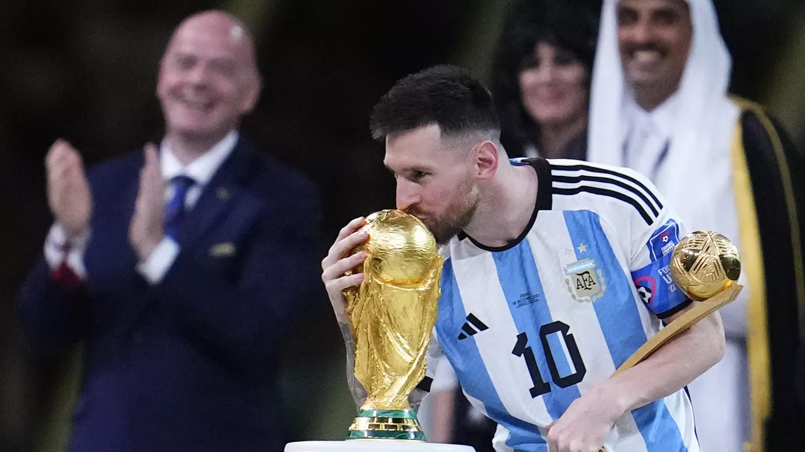

Reseña Histórica de Lionel Messi
Lionel Andrés Messi Cuccittini, nacido el 24 de junio de 1987 en Rosario, Argentina, es considerado uno de los mejores futbolistas de todos los tiempos. Desde pequeño mostró un talento excepcional para el fútbol, pero a los 11 años fue diagnosticado con una deficiencia en la hormona del crecimiento. Esta situación llevó a su familia a buscar oportunidades fuera del país, y fue el FC Barcelona quien le ofreció apoyo médico y deportivo.
Messi se incorporó a las divisiones inferiores del Barça en el año 2000. Su debut profesional con el primer equipo llegó en 2004, y desde entonces construyó una carrera legendaria. Con el Barcelona ganó 10 Ligas de España, 4 Champions League y se convirtió en el máximo goleador histórico del club. Durante su etapa en Europa, también obtuvo 8 Balones de Oro, el mayor reconocimiento individual en el fútbol.
En cuanto a su trayectoria con la Selección Argentina, vivió años de críticas por no conseguir títulos mayores, hasta que en 2021 ganó la Copa América, su primer gran trofeo con la albiceleste. Su consagración definitiva llegó en 2022, al coronarse campeón del mundo en Catar, liderando a Argentina en una final inolvidable ante Francia.
Actualmente juega en el Inter Miami de la MLS (Estados Unidos), y más allá de los títulos, es admirado por su humildad, constancia y talento inigualable. La historia de Messi es la de un niño que superó obstáculos y se convirtió en una leyenda viva del deporte mundial.

Messi Levantando La Copa Del Mundo
El 18 de diciembre de 2022, el mundo del fútbol vivió uno de sus momentos más emocionantes y esperados: Lionel Messi se consagró campeón del mundo con la selección argentina, tras una final inolvidable ante Francia, en el estadio Lusail de Doha, Catar.
Argentina comenzó dominando el partido, con un Messi brillante y un equipo enfocado. El marcador terminó 3-3 tras un duelo lleno de drama, donde Messi anotó dos goles y Kylian Mbappé tres para Francia. El campeón se decidió en la tanda de penales, donde Argentina se impuso 4-2 gracias a las atajadas de Emiliano "Dibu" Martínez y la frialdad de los pateadores.
todo terminó, el mundo fue testigo de una imagen histórica: Messi levantando la Copa del Mundo sonriendo, rodeado de sus compañeros, tras casi dos décadas de lucha, críticas y esfuerzos con la selección. A los 35 años, cerraba así su carrera con el único trofeo que le faltaba, convirtiéndose definitivamente en una leyenda inmortal del fútbol.

Estadísticas
| Equipos (CLUB) | Partidos Jugados | Goles | Asistencias | Títulos Ganados |
|---|---|---|---|---|
| FC Barcelona | 778 | 672 | 268 | 35 |
| Paris Saint-Germain (PSG) | 75 | 32 | 35 | 3 |
| Inter Miami | 66 | 56 | 25 | 2 |
| Selección Argentina | 180+ | 106 | 50+ | 3 |
| Total Aproximado | 1112 | 872 | 387 | 46 |
Títulos
Los títulos más importantes ganados por Lionel Messi hasta julio de 2025, tanto a nivel de clubes como con la selección argentina:
Títulos con FC Barcelona (2004–2021)
- Champions League (4): 2006, 2009, 2011, 2015
- LaLiga (10): 2005, 2006, 2009, 2010, 2011, 2013, 2015, 2016, 2018, 2019
- Copa del Rey (7): 2009, 2012, 2015, 2016, 2017, 2018, 2021
- Supercopa de España (8): 2005, 2006, 2009, 2010, 2011, 2013, 2016, 2018
- Mundial de Clubes (3): 2009, 2011, 2015
- Supercopa de Europa (3): 2009, 2011, 2015
Títulos con París Saint-Germain (2021–2023)
- Ligue 1 (2): 2022, 2023
- Supercopa de Francia (1):2022
🏆 Títulos con Inter Miami (2023–...)
- Leagues Cup (1): 2023
🇦🇷 Títulos con la Selección Argentina
- Copa Mundial de la FIFA (1)2022 (Qatar)
- Copa América (2): 2021 (Brasil), 2024 (Miami)
- Finalissima (1):2022 (vs. Italia)
- Medalla de Oro Olímpica (1):2008 (Beijing)
- Mundial Sub-20 (1): Mundial Sub-20 (1):
Títulos Individuales más destacados
- Balón de Oro (8):2009, 2010, 2011, 2012, 2015, 2019, 2021, 2023
- Bota de Oro (6):Máximo goleador europeo en varias temporadas
- FIFA The Best (3):2019, 2022, 2023
- MVP del Mundial: 2014 y 2022
- Máximo goleador histórico del FC Barcelona y de la selección argentina